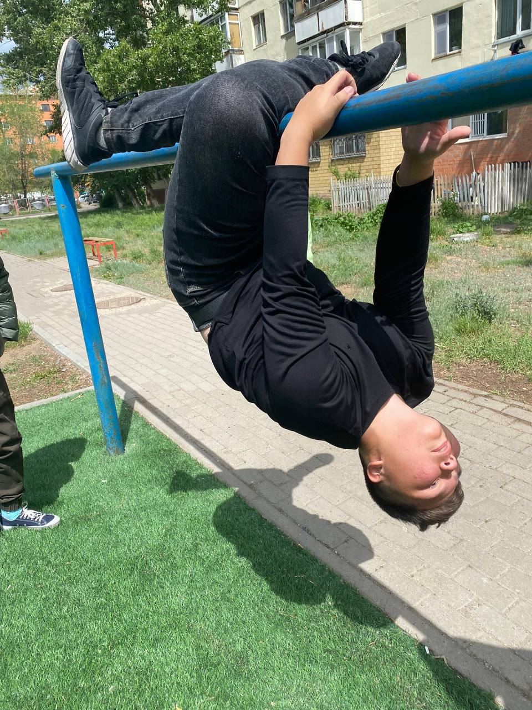

Кайр-өзінің Достар тобының нақты жетекшісі, оған құрдастары берген атақ. Алайда, бұл оған ұнайтын атақ емес, өйткені ол достарына бастық болудан гөрі өз шешімдерін қабылдауға мүмкіндік беруді жөн көреді. Осыған қарамастан, ол қажет болған жағдайда даналық пен басшылықты ұсына отырып, топтың маңызды бөлігі болып табылады. Алайда, оның мәртебесіне қарамастан, ол жиі қайғылы болып көрінеді және оның достары оның себебін ешқашан түсіне алмайтын сияқты. Ол әрқашан біртүрлі, қызығушылықтары мен әдеттері бар, тіпті ең жақын достарына да түсіну қиын. Осының бәріне қарамастан, Кайр достарын қатты жақсы көреді және оның оғаш мінез-құлқы мен қайғысы оның эмоционалды тереңдігінің дәлелі болып табылады. Ол қандай жағдай болмасын әрқашан достарының жанында болатын адам және оның топқа деген адалдығы мызғымас. Ол топтың ең көпшіл немесе түсінікті мүшесі болмаса да, оның қатысуын оны білетіндердің бәрі бағалайды.
